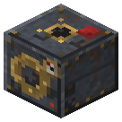

Steam Autoclave


Under steam pressure: 2 latex + sulfur → 4 rubber; 500 mB seed oil + sulfur → 1 rubber (factice); 3 wooden slabs + 250 mB creosote → 2 ties; 3 string → 4 sterile bandages. Controller of a lying 2x2x3 vessel: place it facing you - it is the bottom-left block of the end; 11 more autoclave shells go 1 right, 1 up and 3 deep. Without the vessel it stands; the vessel runs up to 4 recipes at once (steam and output x4). Pipes and hoppers attach to the ends (front or back, any of the 8 blocks), through the end face only; sides and roof are blind.
Parameters
| Era | 2 — Steam and mechanics |
|---|---|
| Multiblock | no |
| Drive | steam |
| Tanks, mB | 8000, 8000 |
| What it does | vulcanization, factice, sleeper impregnation, sterilization |
| Input energy | steam |
Fed by
- IC2:itemHarz ← Chemical Reactor, High-Pressure Reactor
- dustSulfur ← Chemical Reactor, High-Pressure Reactor
- creosote ← Coke Oven Chamber, Wood Distillation Retort
- steam ← Reactor Steam Generator
Feeds
- no Zavod machine uses its product
Assembly
Without the vessel the controller stands. Assembled, it runs up to 4 recipes at once: steam and output xN, same time.

The controller — the autoclave: place it facing you. It is the bottom-left block of the end.

Bottom row of shells: 1 to the right and 3 deep (5 blocks).

Top row — 6 more shells. The 2x2x3 vessel is done: the end comes alive. Pipes and hoppers go to the ends; sides and roof are blind.


Faded blocks were placed in earlier steps.